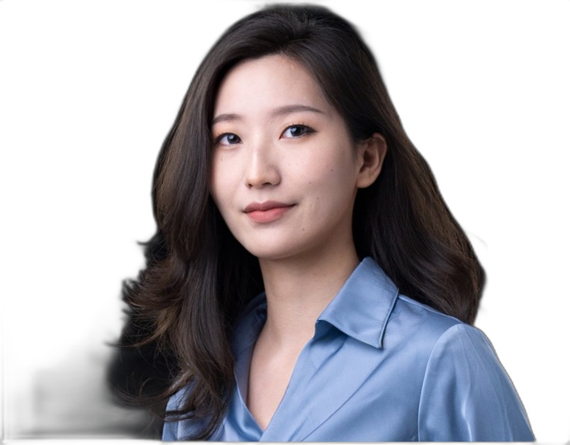
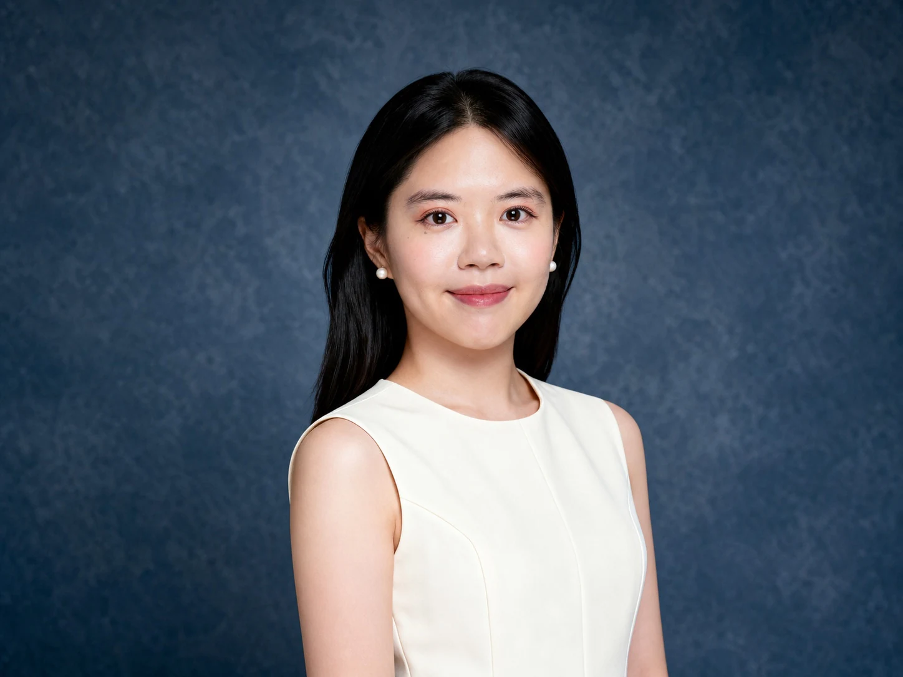
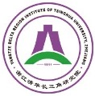
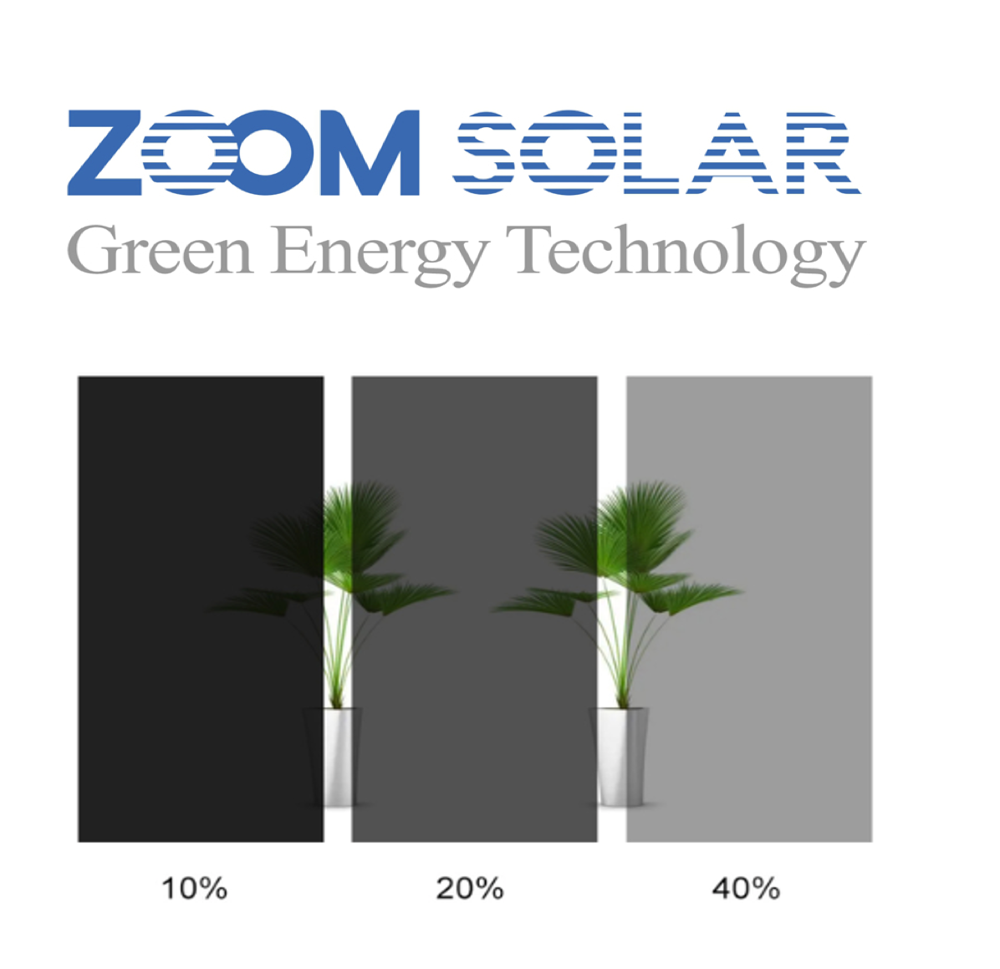

Combines more than ten years of sustainable architecture and design experience with agrivoltaic system innovation.
Combines more than ten years of sustainable architecture and design experience with agrivoltaic system innovation.
Founder · CEO



SunCube Systems
Food · Energy · Climate
SunCube is a Singapore-based agrivoltaic systems company. We design and integrate crop-responsive solar infrastructure around the needs of each farm, local climate and cultivation system—helping growers improve growing conditions while producing clean energy.
We are not a photovoltaic panel manufacturer. SunCube works as an agrivoltaic architect and system integrator: optimizing the relationship between crops, light and energy, then coordinating structures, solar components, irrigation, sensing and delivery partners into one practical farm system.
Behind SunCube
Our Team
Core team
Combines more than ten years of sustainable architecture and design experience with agrivoltaic system innovation.
Founder · CEO
 Brings a NUS Built Environment PhD and over five years of academia–industry photovoltaic research.
Brings a NUS Built Environment PhD and over five years of academia–industry photovoltaic research.
Technical Director
 NUS PhD and solar energy researcher specializing in advanced photovoltaic technologies.
NUS PhD and solar energy researcher specializing in advanced photovoltaic technologies.
PV Technology Director

Bridges SunCube’s technical team and its customers—turning complex agrivoltaic concepts into clear, practical language for real farm decisions.Marketing · Branding Lead
 Connects sensing, monitoring and software into an intuitive experience for future intelligent farm operations.
Connects sensing, monitoring and software into an intuitive experience for future intelligent farm operations.
IoT · Software Designer
 Brings hands-on horticulture and farming experience to crop planning, ornamental cultivation and practical growing decisions.
Brings hands-on horticulture and farming experience to crop planning, ornamental cultivation and practical growing decisions.
Gardening Director
Principal investigator & advisors

Principal Investigator

Advisor

Advisor
Support


Partnership

PV integration partner